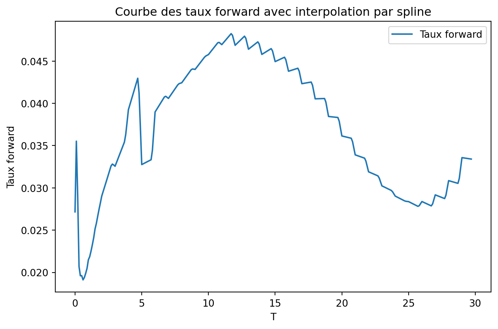
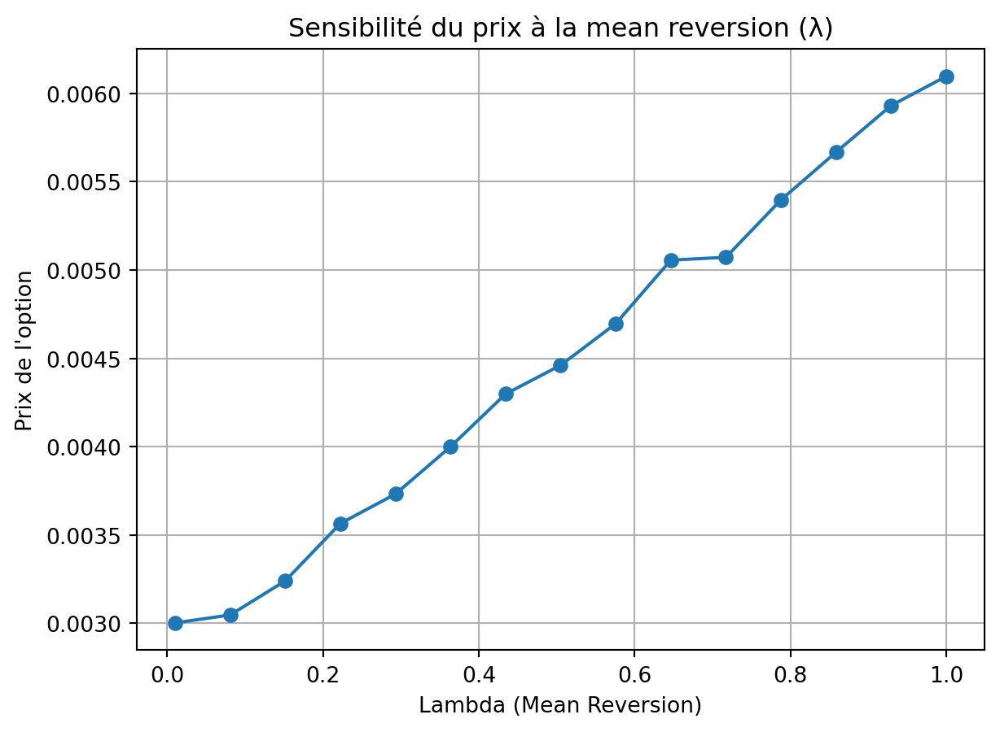

Que ce soit pour les banques, les assureurs ou les fonds de pension, la courbe de taux zéro-coupon constitue la brique de base pour la valorisation de nombreux instruments financiers, de la détermination du prix des obligations aux produits dérivés plus complexes tels que les swaps de taux, les caplets, les swaptions ou encore les produits structurés de taux. De ce fait, la construction fiable, cohérente et régulièrement mise à jour d’une courbe de taux zéro-coupon représente un enjeu majeur.
Dans ce contexte, ce projet propose une méthodologie complète de reconstitution de la courbe de taux zéro-coupon implicite, élaborée à partir des cotations de marché disponibles sur différents segments : Money Market (marché monétaire), Futures et Swaps. L’approche adoptée repose sur une combinaison de bootstrapping, permettant d’extraire les taux zéro-coupon pour chaque maturité observable, et d’interpolations par spline cubique, afin d’assurer la lissité et la continuité de la courbe sur l’ensemble de l’échéancier, y compris sur les maturités non directement observées.
La courbe obtenue sert ensuite de référence pour la valorisation de produits dérivés de taux, en particulier les caplets et les swaptions, via le modèle classique de Black, largement utilisé sur les marchés. Toutefois, afin de mieux capturer la dynamique temporelle des taux d’intérêt et de prendre en compte la structure temporelle de la volatilité implicite, la seconde partie du projet repose sur la calibration d’un modèle de Hull-White, un modèle de taux affine avec retour à la moyenne. La calibration est réalisée à partir des cotations de caplets at-the-money (ATM), à l’aide d’une procédure de recherche numérique par dichotomie.
Le projet met également en évidence la sensibilité de la courbe de taux forward et des prix d’options aux paramètres de marché, notamment la volatilité et le paramètre de mean reversion du modèle Hull-White. Cette analyse de sensibilité illustre comment la structure de la courbe de taux et son évolution future sont influencées par les hypothèses de modélisation, ce qui est particulièrement crucial pour les desks de trading, les gestionnaires d’actifs ou les équipes de gestion actif-passif (ALM).
Enfin, le projet se prolonge par une extension appliquée aux produits structurés : la valorisation de caplets à barrière désactivante (knock-out caplets), qui nécessite une approche par simulation Monte-Carlo. Cette extension illustre comment la dynamique du taux court, simulée sous la mesure forward neutre, peut être exploitée pour évaluer des produits de plus en plus complexes, répondant à des besoins spécifiques d’investisseurs ou de gestionnaires de risques.
La courbe interbancaire est une courbe de taux qui représente les taux d’intérêt auxquels les banques se prêtent de l’argent entre elles. Elle est utilisée pour déterminer les taux d’intérêt des prêts et des emprunts à court terme. Elle est construite sur le court terme (maturité<6M) à partir des taux du marchés monétaire (Money Market) basés sur les dépots non garantis entre banques. Sur le moyen terme (6m - 3y) elle est construite à partir des contrats futures, i.e. des forwards sur un marché OTC (Over The Counter) et sur le long terme (>3y) elle est construite à partir des contrats de swap euribor (Euro Interbank Offered Rate) 3M ou 6M.
Ci dessous, nous disposons de ces données de taux de marché cotés sur le marché interbancaire. Nous allons essayer de reconstituer la courbe de taux zero coupon implicite, qui ne cote pas directement sur le marché. Le fichier de données contient trois variables : - Type d’instruments (Money Market, Futures, Swap) - Maturité (en années) - Taux d’intérêt
import pandas as pdimport matplotlib.pyplot as pltimport warningswarnings.filterwarnings('ignore')data = pd.read_excel('data/Data_tx.xlsx', sheet_name='tx_marche')data.columns = ['type', 'T', 'tx']data
type
T
tx
0
MM
0.25
0.030698
1
MM
0.50
0.026191
2
MM
0.75
0.023958
3
MM
1.00
0.022979
4
FUT
1.25
0.978691
5
FUT
1.50
0.977094
6
FUT
1.75
0.974981
7
FUT
2.00
0.972911
8
FUT
2.25
0.970984
9
FUT
2.50
0.969711
10
FUT
2.75
0.968436
11
SWAP
3.00
0.026112
12
SWAP
4.00
0.028117
13
SWAP
5.00
0.029680
14
SWAP
6.00
0.031107
15
SWAP
7.00
0.032313
16
SWAP
8.00
0.033382
17
SWAP
9.00
0.034385
18
SWAP
10.00
0.035312
19
SWAP
11.00
0.036197
20
SWAP
12.00
0.037003
21
SWAP
13.00
0.037668
22
SWAP
14.00
0.038201
23
SWAP
15.00
0.038624
24
SWAP
20.00
0.039380
25
SWAP
25.00
0.038501
26
SWAP
30.00
0.037668
En l’absence d’oppotunité d’arbitrage, les valorisations des instruments de marché s’expriment en fonction des taux zéro coupon implicites suivantes :
Sur le segment Money Market, on cote en taux monétaires :
avec t le temps courant, T la maturité et \(\delta\) la période de capitalisation. Dans notre cas, t=T=0 et \(\delta\) varie en fonction de la maturité.
Sur le segment Future, on côte en 1 - tx forward :
\[
future(T, T+\delta) = 1 - L_t(T,T+\delta).
\] Dans notre cas, t=0, T= maturité - 3m et \(\delta = 3m\).
avec K le taux fixe du swap qui égalise la PV du swap vaut 0 et \(lvl(t)=\sum_{i=1}^{n} \delta_i B(t, T_i)\) le taux de marché à la maturité \(T_n\). Dans notre cas, la date de départ est le spot, i.e. \(T_0=0\) et \(T_n\) est la maturité du swap, et t=0 (vu d’aujourd’hui).
De ce fait, le données ne sont pas homogènes en taux du fait de la différente cotations des instruments. Nous allons donc les transformer en taux monétaires pour les homogénéiser.
Remarques préliminaires : - En zone EURO, les swaps standards côtés sur le marché ont une fréquence de paiement semestrielle pour la patte variable et annuelle pour la patte fixe. Ainsi pour le calcul du level du swap, \(\delta=1\) et on ajoute progressivement les taux de marché. - Pour simplifier les calculs, nous supposerons que les dates de départ des taux monétaires et des taux de swap sont spot (i.e. T0 = 0 et non 1 ou 2 jours).
Methode de bootstrapping & stripping :
Pour extraire les taux zéro coupon implicites, nous allons utiliser la méthode de bootstrapping. Cette méthode consiste à calculer les taux zéro coupon implicites à partir des taux de marché. Pour cela, nous allons utiliser les formules des taux monétaires présentées ci-dessus, qui sont vu comme des fonctions de taux zéro coupon implicites.
Comme les taux de swap ne sont pas nécessairement disponibles pour toutes les maturités annuelles, il faut interpoler les taux intermédiaires. Cela permettra de simplifier la méthode de bootstrapping. Nous allons utiliser une interpolation par spline cubic afin d’avoir des taux swap par an. Une interpolation par spline permet d’avoir des bonnes propriétés en terme de dérivabilité et de continuité de la courbe de taux.
Il s’agira donc de construire une nouvelle courbe de taux de marché discrète avec des cotations annuelles de taux swap à l’aide d’une méthode d’interpolation par spline, en plus des autres instruments. Par la suite, on supposera que cette nouvelle courbe est la courbe de marché de référence, i.e. la courbe utilisée pour impliciter les taux zéro coupon.
Enfin, nous allons faire du stripping afin de reconstituer une courbe de taux zero coupon implicite plus lisse à l’aide de différentes méthodes d’interpolations (linéaire, spline, etc).
I.2. Construction de la courbe des taux zéro-coupon
import numpy as npimport pandas as pdfrom scipy.interpolate import interp1ddef interpolate_and_update_df(data, col_x, col_y, kind='cubic', start=3, end=30, step=1):""" Interpole les taux SWAP et met à jour le DataFrame avec les nouvelles valeurs interpolées. Paramètres : - data : DataFrame d'origine contenant une colonne 'type' avec 'SWAP', 'T' et 'tx'. - kind : Type d'interpolation (par défaut 'cubic', peut être 'linear', 'quadratic', etc.). - start : Valeur minimale de T pour l'interpolation (par défaut 3). - end : Valeur maximale de T pour l'interpolation (par défaut 31). - step : Pas d'incrémentation pour la grille interpolée (par défaut 1). Retourne : - new_df : DataFrame mis à jour avec les taux SWAP interpolés. """ data = data.copy() x, y = data[col_x].values, data[col_y].values f = interp1d(x, y, kind=kind) xnew = np.arange(start, end+step, step) tx_new = f(xnew) df = pd.DataFrame({col_x: xnew, col_y: tx_new})return dfdf_interp = interpolate_and_update_df(data, 'T', 'tx') df_interp['type'] ='SWAP'df_interp.head()
T
tx
type
0
3
0.026112
SWAP
1
4
0.028117
SWAP
2
5
0.029680
SWAP
3
6
0.031107
SWAP
4
7
0.032313
SWAP
# Le rajoiuter dans le dfnew_df = pd.concat([data[data["type"] !="SWAP"], df_interp], ignore_index=True)new_df.head()
type
T
tx
0
MM
0.25
0.030698
1
MM
0.50
0.026191
2
MM
0.75
0.023958
3
MM
1.00
0.022979
4
FUT
1.25
0.978691
# Affichage d'une courbe homogène de taux de marché en fonction de la maturiténew_df['tx_h'] = new_df.apply(lambda x: 1- x['tx'] if x['type'] =='FUT'else x['tx'], axis=1)plt.figure(figsize=(8, 5))plt.plot(new_df["T"], new_df["tx_h"], marker='o', linestyle='-', color='b')plt.xlabel('Maturité')plt.ylabel('Taux de marché')plt.title('Courbe des taux de marché')plt.grid()plt.show()
Extraction du taux zero coupon sur le segment Money Market
Les taux zéro-coupon continus sont définis par la formule suivante :
\[
r(t,T) = -\frac{1}{T-t} \ln B(t,T),
\]
où B(t,T) est le facteur d’actualisation (\(B(t,T) = exp(-r(t,T) \times T)\) ), i.e. le prix d’une obligation zéro-coupon de maturité T à la date t.
Ils sont la brique de base pour la valorisation des produits dérivés et des obligations. De ce fait, nous allons essayer de reconstituer la courbe des taux zéro-coupon implicite à partir de la courbe des taux de marché à l’aide de la méthode du bootstrapping. Cette méthode consiste à calculer les taux zéro-coupon implicites à partir des taux de marché en utilisant la formule suivante selon le segment Money Market :
avec K le taux fixe du swap qui fait que la PV du swap vaut 0 et \(lvl(t)=\sum_{i=1}^{n} \delta_i B(t, T_i)\) le taux de marché à la maturité \(T_n\). De ce fait, le facteur d’actualisation est : \[
B(0,T_n) = \frac{1 - K \sum_{i=1}^{n-1} \delta_i B(0,T_i)}{1 + K}
\]
# Extraction des facteurs d'actualisation pour les Swapsswap = new_df[new_df['type'] =='SWAP']fut_len =len(fut)df_ZC = pd.concat([df_ZC, swap], ignore_index=True)for i inrange(mm_len+fut_len, len(df_ZC)): T_n = df_ZC.loc[i, 'T'] # Récupère la valeur de T actuelle mask = (df_ZC['T'] < T_n) & (df_ZC['T'] %1==0) # Sélectionne uniquement les T entiers < T_n df_ZC.loc[i, 'B'] = (1- df_ZC.loc[i, 'tx'] *sum(df_ZC.loc[mask, 'B'].fillna(0)))/(1+df_ZC.loc[i, 'tx']) df_ZC.loc[i, 'R'] =- np.log(df_ZC.loc[i, 'B']) / T_n
plt.figure(figsize=(8, 5))plt.plot(df_ZC['T'], df_ZC['R'], label='Courbe de taux zéro coupon', marker='o')plt.plot(new_df["T"], new_df["tx_h"], label='Taux de marché', marker='o')plt.xlabel('T')plt.ylabel('R')plt.legend()plt.title('Courbe de taux zéro coupon discrétisée')
Text(0.5, 1.0, 'Courbe de taux zéro coupon discrétisée')
Comme on peut le constater, le mode d’interpolation a un impact significatif sur le calcul des taux de marché car il affecte la forme de la courbe des taux et donc la valorisation des instruments financiers.
I.3. Construction de la courbe des taux forward
A partir de la courbe des taux zéro-coupon issue de la méthode de bootstrapping, nous souhaitons tracer la courbe des taux forwards de tenor 3M en fonction de la maturité à l’aide des méthodes d’interpolation linéaire et par spline, avec une discrétisation de 0.1 an.
Pour tracer la courbe taux forward, on utilisera la formule suivante pour calculer les taux forward :
Pour le segment swap, il s’agira d’interpoler les taux zéro-coupon implicites pour avoir des tx forwards 3M. # changer la discretisatio à 1an ce qui est différent du ténor.
new_df_ZC= interpolate_and_update_df(df_ZC, 'T', 'R', kind='linear', start=0, end=30, step=0.1)tau =0.25# 3 mois = 0.25 andef compute_forward_rates(R, T_range, tau):""" Calcule les taux forward pour chaque maturité """ fwd_rates = [] T_values = []for i inrange(len(T_range)-1): T = T_range[i] T_tau = T + tauif T_tau >=max(T_range):break# Éviter d'extrapoler au-delà des données disponibles B_T = np.exp(-R[i] * T) R_T_tau = np.interp(T_tau, T_range, R) B_T_tau = np.exp(-R_T_tau * T_tau)# Formule du taux forward instantané fwd_rate = (B_T / B_T_tau -1) / tau fwd_rates.append(fwd_rate) T_values.append(T)return pd.DataFrame({"T": T_values, "tx_fwd": fwd_rates})fwd_rates = compute_forward_rates(new_df_ZC['R'], new_df_ZC['T'], tau)plt.figure(figsize=(8, 5))plt.plot(fwd_rates["T"],fwd_rates["tx_fwd"], label='Taux forward')plt.xlabel('T')plt.ylabel('Taux forward')plt.legend()plt.title('Courbe des taux forward avec interpolation linéaire')
Text(0.5, 1.0, 'Courbe des taux forward avec interpolation linéaire')
new_df_ZC= interpolate_and_update_df(df_ZC, 'T', 'R', kind='cubic', start=0, end=30, step=0.1)tau =0.25# 3 mois = 0.25 anfwd_rates = compute_forward_rates(new_df_ZC['R'], new_df_ZC['T'], tau)plt.figure(figsize=(8, 5))plt.plot(fwd_rates["T"],fwd_rates["tx_fwd"], label='Taux forward')plt.xlabel('T')plt.ylabel('Taux forward')plt.legend()plt.title('Courbe des taux forward avec interpolation par spline')
Text(0.5, 1.0, 'Courbe des taux forward avec interpolation par spline')
Lorsqu’on utilise une interpolation linéaire, on obtient une courbe plus discontinue. La courbe a une structure en marches d’escalier. Il y a des sauts brusques lorsque l’on passe d’un intervalle à un autre. En effet, par nature, l’interpolation linéaire qui ne prend pas en compte les points intermédiaires. En interpolant avec une fonction spline, on obtient une courbe plus lisse et continue.Elle est plus cohérente avec l’évolution naturelle des taux d’intérêt. En effet, la fonction spline est une fonction polynomiale qui passe par tous les points de la courbe. Elle est plus flexible et permet de mieux capturer les variations des taux d’intérêt.
Nous sommes intéressés à ce qui pourrait se passer lorsque nous shiftons le taux de swap 5Y de 10 points de base. Cela permet de déterminer la sensibilité de la courbe des taux forward aux variations des taux de swap et donc donner des indications sur comment hedger ce risque.
Nous allons donc calculer le taux forward 3M pour les deux courbes de taux forward et comparer les résultats.
choc =10/10000new_df["tx_s"] = new_df.apply(lambda x: x['tx_h']+choc if x['T'] ==5else x['tx_h'], axis=1)# plotplt.figure(figsize=(8, 5))plt.plot(new_df["T"], new_df["tx_s"], label='Taux de marché shiftés', color="r")plt.plot(new_df["T"], new_df["tx_h"], label='Taux de marché', color="b")plt.xlabel('Maturité')plt.ylabel('Taux de marché')plt.title('Courbe des taux de marché')plt.legend()plt.grid()plt.show()new_df["tx_s"] = new_df.apply(lambda x: x['tx']+choc if x['T'] ==5else x['tx'], axis=1)
# Extraction des facteurs d'actualisation pour les Money Marketimport numpy as npimport pandas as pddef compute_discount_factors(new_df, col_T="T", col_tx="tx"):""" Calcule les facteurs d'actualisation (B) et les taux zéro-coupon (R) à partir des taux du marché pour les instruments MM, FUT et SWAP. Paramètres : - new_df : DataFrame contenant les taux du marché avec les colonnes spécifiées. - col_T : Nom de la colonne contenant les maturités (ex: "T"). - col_tx : Nom de la colonne contenant les taux du marché (ex: "tx"). Retourne : - df_ZC : DataFrame contenant les facteurs d'actualisation et les taux zéro-coupon. """# --- Extraction des données du marché monétaire (MM) --- mm = new_df[new_df['type'] =='MM'].copy() mm.loc[:, 'B'] =1/ (1+ mm[col_tx] * mm[col_T]) mm.loc[:, 'R'] =- np.log(mm['B']) / mm[col_T] df_ZC = mm.copy()# --- Extraction des données Futures (FUT) --- fut = new_df[new_df['type'] =='FUT'].copy() df_ZC = pd.concat([df_ZC, fut], ignore_index=True) mm_len =len(mm)# --- Calcul des facteurs d'actualisation pour les Futures ---for i inrange(mm_len, len(df_ZC)): df_ZC.loc[i, 'B'] = df_ZC.loc[i-1, 'B'] / (1+ (1- df_ZC.loc[i, col_tx]) *0.25) df_ZC.loc[i, 'R'] =- np.log(df_ZC.loc[i, 'B']) / df_ZC.loc[i, col_T]# --- Extraction des données Swaps (SWAP) --- swap = new_df[new_df['type'] =='SWAP'].copy() fut_len =len(fut) df_ZC = pd.concat([df_ZC, swap], ignore_index=True)# --- Calcul des facteurs d'actualisation pour les Swaps ---for i inrange(mm_len + fut_len, len(df_ZC)): T_n = df_ZC.loc[i, col_T] # Maturité actuelle mask = (df_ZC[col_T] < T_n) & (df_ZC[col_T] %1==0) # Sélection des T entiers < T_n sum_B =sum(df_ZC.loc[mask, 'B'].fillna(0)) df_ZC.loc[i, 'B'] = (1- df_ZC.loc[i, col_tx] * sum_B) / (1+ df_ZC.loc[i, col_tx]) df_ZC.loc[i, 'R'] =- np.log(df_ZC.loc[i, 'B']) / T_nreturn df_ZCdf_ZC_s = compute_discount_factors(new_df, col_T="T", col_tx="tx_s")df_ZC_s=pd.concat([pd.DataFrame({"T": [0], "B": [1], "R": [0]}), df_ZC_s], ignore_index=True)plt.figure(figsize=(8, 5))plt.plot(df_ZC_s.loc[1:,'T'], df_ZC_s.loc[1:,'R'], label='Courbe de taux zéro coupon shifté', marker='o')plt.plot(df_ZC.loc[1:,"T"], df_ZC.loc[1:,"R"], label='Courbe de taux zéro coupon non shifté', marker='o')plt.xlabel('T')plt.ylabel('R')plt.legend()plt.title('Courbe de taux zéro coupon discrétisée')
Text(0.5, 1.0, 'Courbe de taux zéro coupon discrétisée')
new_df_ZC= interpolate_and_update_df(df_ZC_s, 'T', 'R', kind='linear', start=0, end=30, step=0.1)tau =0.25# 3 mois = 0.25 anfwd_rates = compute_forward_rates(new_df_ZC['R'], new_df_ZC['T'], tau)plt.figure(figsize=(8, 5))plt.plot(fwd_rates["T"],fwd_rates["tx_fwd"], label='Taux forward')plt.xlabel('T')plt.ylabel('Taux forward')plt.legend()plt.title('Courbe des taux forward avec interpolation par spline')
Text(0.5, 1.0, 'Courbe des taux forward avec interpolation par spline')

new_df_ZC= interpolate_and_update_df(df_ZC_s, 'T', 'R', kind='cubic', start=0, end=30, step=0.1)tau =0.25# 3 mois = 0.25 anfwd_rates = compute_forward_rates(new_df_ZC['R'], new_df_ZC['T'], tau)plt.figure(figsize=(8, 5))plt.plot(fwd_rates["T"],fwd_rates["tx_fwd"], label='Taux forward')plt.xlabel('T')plt.ylabel('Taux forward')plt.legend()plt.title('Courbe des taux forward avec interpolation par spline')
Text(0.5, 1.0, 'Courbe des taux forward avec interpolation par spline')
En shiftant le taux de swap 5Y, la courbe de forward baisse brusquement pour T=5Y. Il y a une déformation locale de la courbe des taux forward. Cela signifie que la courbe des taux forward est sensible aux variations des taux de swap. En effet, les taux swap sont des instruments financiers qui permettent de se couvrir contre les variations des taux d’intérêt.
II. Valorisation de swaptions et de caplets
Pour coter les caplets/floorlets et swaptions, le modèle de Black est souvent utilisé. Ce modèle est basé sur l’hypothèse que les taux d’intérêt sont log-normalement distribués. Il permet de calculer le prix d’un caplet/floorlet et d’un swaption en fonction des taux d’intérêt et de la volatilité implicite.
L’EDS (Equation Différentielle Stochastique) de Black est donnée par :
\[
dL(t) = \sigma L(t) dW(t)
\]
avec \(L(t)\) le taux, \(\sigma\) la volatilité du taux et \(W(t)\) un mouvement brownien. En utilisant le changement de numéraire, ce taux est une martingale sous la mesure du numeraire (probabilité risque neutre). Cela permet de calculer le prix d’un caplet/floorlet ou d’une swaption.
Caplets et Floorlets
Pour un caplet, le prix est donné par la formule suivante :
\[
Caplet(t,T_{i-1},T_i) = N \delta_i B(t,T_i) \left[ L_i(t) \phi(d) - K \phi (d - \sigma_i \sqrt{T_{i-1}-t} )\right]
\]
avec \(d = \frac{1}{\sigma \sqrt{T_{i-1}-t}} \left( \ln \left( \frac{L_i(t)}{K} \right) + \frac{\sigma^2(T_{i-1}-t)}{2} \right)\), \(L_i(t)\) le taux forward 3M à la date t, \(K\) le strike du caplet, \(N\) le nominal, \(\delta_i\) la période de capitalisation, \(B(t,T_i)\) le facteur d’actualisation à la maturité \(T_i\), \(\sigma_i\) la volatilité du taux forward 3M à la maturité \(T_i\) et \(\phi\) la fonction de répartition de la loi normale standard.
Pour un floorlet, le prix est donné par la formule suivante :
\[
Floorlet(t,T_{i-1},T_i) = N \delta_i B(t,T_i) \left[ K \phi (d - \sigma_i \sqrt(T_{i-1}-t) ) - L_i(t) \phi(d) \right]
\]
Swaptions
Pour un swaption donneur, le prix est donné par la formule suivante :
avec \(F_S(t)\) le taux swap à la date t, \(K\) le strike du swaption, \(N\) le nominal, \(\delta\) la période de capitalisation, \(B(t,T_j)\) le facteur d’actualisation à la maturité \(T_j\), \(\sigma_S\) la volatilité du taux swap et \(\Phi\) la fonction de répartition de la loi normale standard.
Il s’agit, à partir des cotations décrites dans le tableau ci-dessous et de la courbe des taux zéro-coupon construite précédemment, calculer les prix de marché de caplets sur euribor12M, ce qui implique une période de capitalisation annuelle, de maturité T = 5Y, i.e. payé à 6Y, et de strikes K associés au tableau. Nous souhaitons ainsi calculer : - Le prix des caplets Caplet(t, 5Y, 6Y) pour les strikes du tableau ci-dessous. - Le prix des swaptions Swaption(t, 5Y, 6Y) pour les strikes du tableau ci-dessous.
import numpy as npfrom scipy.stats import normdef price_oplet(N, delta_i, B_t_Ti, L_i_t, K, sigma_i, Ti, t, option_type='caplet'):""" Calcule la valeur d'un caplet selon le modèle de Black. Paramètres : - N : Notional - delta_i : Période du caplet - B_t_Ti : Facteur d'actualisation B(t, Ti) - L_i_t : Taux forward Li(t) - K : Strike du caplet - sigma_i : Volatilité implicite - Ti_1 : Date de début de la période - Ti : Date de fin de la période - t : Temps actuel Retourne : - Valeur du caplet """ Ti_1 = Ti - delta_i d1 = (np.log(L_i_t / K) +0.5* sigma_i**2* (Ti_1 - t)) / (sigma_i * np.sqrt(Ti_1 - t)) d2 = sigma_i * np.sqrt(Ti_1 - t) - d1if option_type =='caplet': price = N * delta_i * B_t_Ti * (L_i_t * norm.cdf(d1) - K * norm.cdf(-d2))elif option_type =='floorlet': price = N * delta_i * B_t_Ti * (K * norm.cdf(d2) - L_i_t * norm.cdf(-d1))return pricefor i in vol_data.index:# Notional N =1# Période du caplet delta_i =1# Maturité du caplet T=5# Facteur d'actualisation B(t, Ti) B_t_Ti = df_ZC.loc[df_ZC['T'] == T+1, 'B'].values[0]# Taux forward Li(t) L_i_t = (1/delta_i) * ((df_ZC.loc[df_ZC['T'] == T, 'B'].values[0]/df_ZC.loc[df_ZC['T'] == T+1, 'B'].values[0]) -1)# Strike du caplet K = L_i_t + vol_data.loc[i, 'Strike en bps et en rel. / fwd']/10000# Volatilité implicite sigma_i = vol_data.loc[i, "Vols Caplets"] # Date de début de la période Ti = T + delta_i# Temps actuel t =0 caplet_price = price_oplet(N, delta_i, B_t_Ti, L_i_t, K, sigma_i, Ti, t, option_type='caplet') vol_data.loc[i, 'Caplet Price MKT'] = caplet_pricevol_data
Strike en bps et en rel. / fwd
Vols Caplets
Vols Swaptions
Caplet Price MKT
0
-100
0.311859
0.311859
0.012511
1
-50
0.283274
0.283274
0.009788
2
-25
0.265921
0.265921
0.008419
3
0
0.250000
0.250000
0.007137
4
25
0.243451
0.243451
0.006185
5
50
0.249019
0.249019
0.005661
6
100
0.271828
0.271828
0.005167
# pricer les swaptions
III. Modèle de Hull-White
III.1 Du modèle HJM vers le modèle Hull&White
Pour une maturité \(T\) fixée, Heath, Jarrow et Morton ont supposé que le taux forward instantané évolue selon la dynamique suivante :
La dynamique (1) ne se place pas forcément dans un cadre sans opportunité d’arbitrage. Les auteurs ont montré que le processus \(\alpha\) ne pouvait pas être choisi arbitrairement et que, pour qu’il existe une unique mesure martingale équivalente, \(\alpha\) devait être lié à la volatilité du zéro coupon.
Supposons donc l’existence d’une unique mesure martingale équivalente \(\mathbb{Q}\) (mesure risque-neutre) dont le numéraire est l’actif sans risque.
On suppose que le prix du zéro coupon (payant une unité de devise en date \(T\)) évolue sous \(\mathbb{Q}\) selon l’EDS :
A quelle catégorie de modèle appartient le modèle Hull&White? Justifier.
Le modèle Hull & White est un modèle à structure à terme affine, i.e. un modèle de taux d’intérêt pour lequel le taux zéro-coupon continu R(t, T ) est une fonction affine du taux court r (t).
Il ressemble à un processus d’Ornstein-Uhlenbeck ou mean reversing process, qui est un processus gaussien définit de la manière suivante :
où \(\theta, \mu, \sigma\) sont des paramètres déterministes et \(W_t\) est le processus de Wiener.
Dans notre cas, on a \(\theta = \lambda\), \(\mu = \frac{\phi(t)}{\lambda}\) et \(\sigma = \sigma(t)\). De ce fait, la moyenne et la variance dépend du temps et le paramètre de vitesse de retour à la moyenne est constant.
Déterminer la loi du processus \(X_t|X_s\)?
Sous la probabilité risque neute \(\mathbb{Q}\), le processus \(X_t\) s’ecrit :
De ce fait, on en déduit que $X_t|X_s ( X_s e^{-(t-s)} + _s^t e^{-(t-u)} (u) du, _s^t e^{-2 (t-u)} (u)^2 d ) $.
III.4 Dynamique des taux forwards
On note ensuite \(L_i(t)\) le taux LIBOR forward à la date \(t\) qui fixe en \(T_i\) et paie en \(T_{i+1}\). Sous l’hypothèse d’absence d’opportunité d’arbitrage, ce taux s’exprime à partir de la courbe de taux : Î \[
L_i(t) = \frac{1}{\delta_i}\left(\frac{B(t, T_i)}{B(t, T_{i+1})} - 1\right) = \frac{1}{\delta_i}\left(Z_t- 1\right) ,
\]
Pour connaitre la dynamique des taux forwards, on applique le lemme d’Itô au processus :
\[
Z_t = \frac{B(t, T_i)}{B(t, T_{i+1})}.
\]
Rappel du lemme d’Itô : Considérons deux actifs \(X\) et \(Y\) et posons \(Z = \frac{X}{Y}\) (la valeur de \(X\) exprimée en numéraire \(Y\)). Le lemme d’Itô nous donne l’évolution de \(Z\) par :
où \(d\tilde{W_t}\) est un mouvement brownien selon le théorème de Girsanov.
La diffusion de \(Z_t\) est une loi log-normale, sans drift sous la probabilité risque forward. De ce fait, il suit le modèle de Black pour la valorisation des options.
On peut écrire ainsi la dynamique du taux forward \(L_i(t)\) sous la probabilité risque forward :
Payoff d’un caplet vanille :
Le payoff d’un caplet sur le taux LIBOR \(L_i(T_i)\), de maturité \(T_i\), avec paiement en \(T_{i+1}\) et de strike \(K\) est donné par :
Formule de valorisation dans le cadre du modèle H&W :
Il peut être démontré que la formule de valorisation de ce caplet s’exprime de la manière suivante :
$ C() $ désigne le prix d’un Call selon le cadre Black, en fonction du forward, du strike, de la maturité, de la volatilité et du facteur d’actualisation.
En effet, on peut réécrire le payoff d’un caplet sous la forme d’un Call sur \(Z_t\) qui suit un modèle de Black :
Le modèle de Hull White permet d’avoir une formule fermée pour le prix des caplets. De fait, puisqu’on a calculé les prix de marché de caplets sur euribor12M, ce qui implique une période de capitalisation annuelle, de maturité T = 5Y, nous pouvons desormais calibrer le paramètre de volatilité \(\sigma_i^*\) avec la méthode de dichotomie et aussi extraire de manière analytique la volatilité instantanée \(\sigma(t)\) du modèle Hull&White, qu’on supposera constante, i.e. \(\sigma(t) = \sigma\).
On pose également, pour la calibration, \(\lambda = 5\%\).
Pour extraire la volatilité spot, nous utiliserons uniquement le prix de marche ATM.
caplet_price_MKT = vol_data.loc[3, 'Caplet Price MKT']print(f"Le prix de marché caplet sur euribor 12M de maturité T=5Y est de {caplet_price_MKT:.4%}")
Le prix de marché caplet sur euribor 12M de maturité T=5Y est de 0.7137%
Cette volatilité spot nous permet de valoriiser les caplets pour des strikes différents de l’ATM à l’aide de la formule de valorisation fermée du modèle Hull et White.
for i in vol_data.index:# Notional N =1# Période du caplet delta_i =1# Maturité du caplet Ti=6# Facteur d'actualisation B(t, Ti) B_t_Ti = df_ZC.loc[df_ZC['T'] == Ti, 'B'].values[0]# Taux forward Li(t) L_i_t = (1/delta_i) * ((df_ZC.loc[df_ZC['T'] == Ti-1, 'B'].values[0]/df_ZC.loc[df_ZC['T'] == Ti, 'B'].values[0]) -1)# Strike du caplet K = L_i_t + vol_data.loc[i, 'Strike en bps et en rel. / fwd']/10000 sigma_i = sigma_i lambda_ =5/100 caplet_price = price_oplet_HW(N, delta_i, B_t_Ti, L_i_t, K, Ti, t, sigma_i, option_type='caplet', model='HW') vol_data.loc[i, 'Caplet Price HW'] = caplet_pricevol_data
Strike en bps et en rel. / fwd
Vols Caplets
Vols Swaptions
Caplet Price MKT
Caplet Price HW
0
-100
0.311859
0.311859
0.012511
0.012015
1
-50
0.283274
0.283274
0.009788
0.009389
2
-25
0.265921
0.265921
0.008419
0.008215
3
0
0.250000
0.250000
0.007137
0.007137
4
25
0.243451
0.243451
0.006185
0.006156
5
50
0.249019
0.249019
0.005661
0.005269
6
100
0.271828
0.271828
0.005167
0.003771
L’une des faiblesses du modèle de Hull et White est le fait qu’il n’arrive pas à capter le smile de volatilité. En effet, la volatilité implicite extraite est un skew. Pour constater ce phénomène, nous inverserons la formule de Black pour les caplets et nous en déduirons la volatilité implicite pour chaque strike. Nous utiliserons toujours la méthode de dichotomie pour trouver la volatilité implicite.
for i in vol_data.index: N =1 delta_i =1 Ti =6 B_t_Ti = df_ZC.loc[df_ZC['T'] == Ti, 'B'].values[0] L_i_t = (1/ delta_i) * ((df_ZC.loc[df_ZC['T'] == Ti-1, 'B'].values[0] / df_ZC.loc[df_ZC['T'] == Ti, 'B'].values[0]) -1) K = L_i_t + vol_data.loc[i, 'Strike en bps et en rel. / fwd'] /10000 lambda_ =5/100 caplet_price_MKT = vol_data.loc[i, 'Caplet Price HW'] sigma_extracted = Dichotomie(N, delta_i, B_t_Ti, L_i_t, K, Ti, t, caplet_price_MKT, option_type='caplet', model='Black') vol_data.loc[i, 'Sigma_HW'] = sigma_extractedvol_data
Strike en bps et en rel. / fwd
Vols Caplets
Vols Swaptions
Caplet Price MKT
Caplet Price HW
Sigma_HW
0
-100
0.311859
0.311859
0.012511
0.012015
0.288669
1
-50
0.283274
0.283274
0.009788
0.009389
0.267386
2
-25
0.265921
0.265921
0.008419
0.008215
0.258287
3
0
0.250000
0.250000
0.007137
0.007137
0.250009
4
25
0.243451
0.243451
0.006185
0.006156
0.242433
5
50
0.249019
0.249019
0.005661
0.005269
0.235466
6
100
0.271828
0.271828
0.005167
0.003771
0.223060
plt.figure(figsize=(8, 5))plt.plot(vol_data["Strike en bps et en rel. / fwd"], vol_data["Sigma_HW"], label='Volatilité extraite', marker='o')plt.plot(vol_data["Strike en bps et en rel. / fwd"], vol_data["Vols Caplets"], label='Volatilité de marché', marker='o')plt.legend()plt.title('Comparaison de la volatilité extraite par le modèle HW et la volatilité de marché')plt.xlabel('Strike en bps et en rel. / fwd ')plt.ylabel('Volatilité')
Text(0, 0.5, 'Volatilité')
ATM = L_i_t
3.7 Valorisation d’un produit structuré
Remarques préliminaires :
Nous garderons dans un premier temps la calibration ATM effectuée avec \(\lambda = 5\%\).
Pour la partie Monte-Carlo, nous admettrons que l’EDS pour le processus \(X_t\) sous la probabilité forward neutre \(Q^T\) associée au numéraire \(B(t,T)\) s’écrit comme :
Nous souhaitons valoriser un caplet de strike \(K\), de dates de fixing \(T_i = 5Y\) et de paiement \(T_{i+1} = 6Y\) et de barrière désactivante \(B\) (avec \(B > K\)).
Écrire le payoff de l’option et tracer la fonction de payoff en fonction de \(L_i(T_i)\). Cette option est-elle plus ou moins chère qu’un simple caplet de strike \(K\) ?
Il est possible de décomposer le payoff à partir d’options vanilles et digitales :
\[
\text{Payoff} = C_K - CB - (B-K) \times D_B
\]
Une option digitale est une option qui paie 1 si le sous-jacent est au-dessus d’un certain seuil et 0 sinon. De ce fait, le payoff de l’option est donné par :
Une option vanille est un contrat financier standardisé qui donne le droit, mais non l’obligation, d’acheter (call) ou de vendre (put) un actif sous-jacent à un prix fixé (strike) à une date donnée (maturité). De ce fait, dans le cas d’un call, le payoff de l’option est donné par :
Rappeler les principes du pricing par méthode de Monte-Carlo.
La méthode de Monte-Carlo est une méthode numérique qui permet de pricer des produits financiers complexes lorsque les formules fermées ne sont pas disponibles. Elle consiste à simuler un grand nombre \(N\) de trajectoires du processus stochastique et à calculer la moyenne empiriques des payoffs actualisés pour obtenir le prix de l’option.
Rappeler comment on simule une loi gaussienne à partir d’une loi uniforme.
Pour simuler une variable aléatoire suivant une loi gaussienne standard \(\mathcal{N}(0,1)\) à partir d’une variable uniforme \(U\) sur \([0,1]\), on applique l’inverse de la fonction de répartition de la loi gaussienne standard (aussi appelée la fonction quantile de la loi normale) :
\[
X = F^{-1}(U)
\]
où \(F\) est la fonction de répartition de la loi normale standard.
On considère un caplet sur euribor12M à barrière désactivante de strike $ K = ATM - 100 bps$, de barrière \(B = ATM + 100 bps\) et de maturité \(T_i = 5Y\). Pour valoriser cette option, nous allons utiliser une méthode numérique de type Monte-Carlo. Pour cela, il est necessaire de connaire la loi de X_t sachant X_s. En nous aidant de la question précédente, on peut déduire que la loi de \(X_t|X_s\) est une loi normale de paramètres :
Pour valoriser cette option, nous pouvons directement utiliser la loi de \(X_5|X_0\) pour simuler les trajectoires du taux court et calculer le payoff de l’option ou diffuser progressivement le taux court en utilisant la loi de \(X_t|X_s\) pour chaque pas de temps. Ensuite, il s’agira de calculer le payoff de l’option à chaque date, en faire la moyenne et l’actualiser pour obtenir le prix de l’option.
Moyenne conditionnelle de X_5 | X_0 : 0.000000
Variance conditionnelle de X_5 | X_0 : 0.000452
Ti_1 =5Ti =6# Simulation Monte Carlon_simulations =10000payoffs = np.zeros(n_simulations)for sim inrange(n_simulations): phi_ = phi(Ti_1, sigma, lambda_) gamma_ = gamma(Ti_1,Ti, sigma, lambda_)# Moyenne mu_X = mean_5_given_0# Ecart-type sigma_X = np.sqrt(var_5_given_0)# X_5|X_0 X = np.random.normal(mu_X, sigma_X) # Calcul du prix B(5,6) selon Hull-White B0_6 = df_ZC.loc[df_ZC['T'] == Ti, 'B'].values[0] # B(0,6) B0_5 = df_ZC.loc[df_ZC['T'] == Ti_1, 'B'].values[0] # B(0,5) B_5_6 = B_t_T(5, 6, B0_6, B0_5, X, sigma, lambda_) B_5_5 = B_t_T(5, 5, B0_5, B0_5, X, sigma, lambda_)# Calcul du taux forward L_i_t L_i_t = ((B_5_5 / B_5_6) -1) bp =100/10000# Définition du strike strike = ATM - bp# Barrière B = ATM + bp# Payoff de l'option payoff = np.maximum(L_i_t - strike, 0) * (L_i_t < B) payoffs[sim] = payoff# Prix de l'option callcall_price = B0_6 * np.mean(payoffs)print(f"Prix du call : {call_price:.6f}")
Prix du call : 0.003048
Méthode 2 : Methode de diffusion
# Simulation Monte Carlon_simulations =10000payoffs = np.zeros(n_simulations)X0 =0Ti =6Ti_1 =5X = np.zeros(Ti)X[0] = X0for sim inrange(n_simulations): phi_ = phi(Ti_1, sigma, lambda_) gamma_ = gamma(Ti_1,Ti, sigma, lambda_)for i inrange(1,Ti): t = i s = i-1 T =5 Xs = X[i-1]# Calcul de la moyenne conditionnelle mu_X, _ = quad(integrand_mean, s, t, args=(t, Xs, s, sigma, lambda_, T)) sigma_X = np.sqrt(compute_variance(sigma, lambda_, t, s)) X[i] = np.random.normal(mu_X, sigma_X)# Calcul du prix B(5,6) selon Hull-White B0_6 = df_ZC.loc[df_ZC['T'] == Ti, 'B'].values[0] # B(0,6) B0_5 = df_ZC.loc[df_ZC['T'] == Ti_1, 'B'].values[0] # B(0,5) B_5_6 = B_t_T(5, 6, B0_6, B0_5, X[Ti_1], sigma, lambda_) B_5_5 = B_t_T(5, 5, B0_5, B0_5, X[Ti_1], sigma, lambda_)# Calcul du taux forward L_i_t L_i_t = ((B_5_5 / B_5_6) -1) bp =100/10000# Définition du strike strike = ATM - bp# Barrière B = ATM + bp# Payoff de l'option payoff = np.maximum(L_i_t - strike, 0) * (L_i_t < B) payoffs[sim] = payoff# Prix de l'option callcall_price = B0_6 * np.mean(payoffs)print(f"Prix du call : {call_price:.6f}")
Prix du call : 0.003032
Nous constatons qu’avec les deux méthodes, nous obtenons des prix d’options similaires (différent de 0.2bps). Cela confirme que les deux méthodes convergent vers le même résultat.
En dégénérant le produit en faisant tendre la barrière à \(+\infty\), nous constatons que le prix de l’option call est égal au prix de marché du forward. En dégénérant le produit en faisant tendre la barrière à 0, nous constatons que le prix de l’option call est égal à 0.
Cela est cohérent car lorsque la barrière est très élevée, le produit est équivalent à un forward et lorsque la barrière est nulle, le produit est équivalent à un call classique. La fonction que nous avons implémenté est donc cohérente et bien implémentée.
Ti_1 =5Ti =6# Simulation Monte Carlon_simulations =10000payoffs = np.zeros(n_simulations)for sim inrange(n_simulations): phi_ = phi(Ti_1, sigma, lambda_) gamma_ = gamma(Ti_1,Ti, sigma, lambda_)# Moyenne mu_X = mean_5_given_0# Ecart-type sigma_X = np.sqrt(var_5_given_0)# X_5|X_0 X = np.random.normal(mu_X, sigma_X) # Calcul du prix B(5,6) selon Hull-White B0_6 = df_ZC.loc[df_ZC['T'] == Ti, 'B'].values[0] # B(0,6) B0_5 = df_ZC.loc[df_ZC['T'] == Ti_1, 'B'].values[0] # B(0,5) B_5_6 = B_t_T(5, 6, B0_6, B0_5, X, sigma, lambda_) B_5_5 = B_t_T(5, 5, B0_5, B0_5, X, sigma, lambda_)# Calcul du taux forward L_i_t L_i_t = ((B_5_5 / B_5_6) -1) bp =100/10000# Définition du strike strike = ATM # - bp# Barrière B = np.inf#ATM + bp# Payoff de l'option payoff = np.maximum(L_i_t - strike, 0) * (L_i_t < B) payoffs[sim] = payoff# Prix de l'option callcall_price = B0_6 * np.mean(payoffs)print(f"Prix du call : {call_price:.6f}")
Prix du call : 0.007094
Nous rendons la barrière ‘bermudéenne’ en étendant la condition de désactivation aux dates 1Y, 2Y, 3Y, 4Y et 5Y. De ce fait, le payoff de cette option s’écrit :
# Option bermudienne# Simulation Monte Carlon_simulations =10000payoffs = np.zeros(n_simulations)X0 =0Ti =6Ti_1 =5X = np.zeros(Ti)X[0] = X0for sim inrange(n_simulations): phi_ = phi(Ti_1, sigma, lambda_) gamma_ = gamma(Ti_1,Ti, sigma, lambda_) L_i_t = np.zeros(Ti_1)for i inrange(1,Ti): t = i s = i-1 T =5 Xs = X[s]# Calcul de la moyenne conditionnelle mu_X, _ = quad(integrand_mean, s, t, args=(t, Xs, s, sigma, lambda_, T)) sigma_X = np.sqrt(compute_variance(sigma, lambda_, t, s)) X[i] = np.random.normal(mu_X, sigma_X)# Calcul du prix B(5,6) selon Hull-White Bi_t = df_ZC.loc[df_ZC['T'] == t, 'B'].values[0] # B(0,6) Bi_s = df_ZC.loc[df_ZC['T'] == s, 'B'].values[0] # B(0,5) B_s_t = B_t_T(s, t, Bi_t, Bi_s, X[i], sigma, lambda_) B_s_s = B_t_T(s, s, Bi_s, Bi_s, X[i], sigma, lambda_)# Calcul du taux forward L_i_t L_i_t[i-1] = (1/ (t-s)) * ((B_s_s / B_s_t) -1)# Calcul du prix B(5,6) selon Hull-White B0_6 = df_ZC.loc[df_ZC['T'] == Ti, 'B'].values[0] # B(0,6) B0_5 = df_ZC.loc[df_ZC['T'] == Ti_1, 'B'].values[0] # B(0,5) B_5_6 = B_t_T(5, 6, B0_6, B0_5, X[Ti_1], sigma, lambda_) B_5_5 = B_t_T(5, 5, B0_5, B0_5, X[Ti_1], sigma, lambda_)# Calcul du taux forward L_i_t L_t = ((B_5_5 / B_5_6) -1) bp =100/10000# Définition du strike strike = ATM - bp# Barrière B = ATM + bp# Payoff de l'option payoff = np.maximum(L_t - strike, 0) * (np.max(L_i_t) < B) payoffs[sim] = payoff# Prix de l'option callcall_price = B0_6 * np.mean(payoffs)print(f"Prix du call : {call_price:.6f}")
Prix du call : 0.003071
L’un des paramètres important du modèle de Hull et White est la mean reversion \(\lambda\), qui caractérise la force de rappel à la moyenne du processus. Ce paramètre a un impact positive sur la valorisation de l’option, comme nous pouvons l’observer dans la figure ci dessous .
# Liste des lambda à testerlambdas = np.linspace(0.01, 1, 15) # Exemple de grille de lambdaresults = []Ti_1 =5Ti =6# Boucle principale sur les lambdasfor lambda_ in lambdas: n_touched =0 payoffs = np.zeros(n_simulations)for sim inrange(n_simulations): phi_ = phi(Ti_1, sigma, lambda_) gamma_ = gamma(Ti_1,Ti, sigma, lambda_)# Moyenne mu_X = mean_5_given_0# Ecart-type sigma_X = np.sqrt(var_5_given_0)# X_5|X_0 X = np.random.normal(mu_X, sigma_X) # Calcul du prix B(5,6) selon Hull-White B0_6 = df_ZC.loc[df_ZC['T'] == Ti, 'B'].values[0] # B(0,6) B0_5 = df_ZC.loc[df_ZC['T'] == Ti_1, 'B'].values[0] # B(0,5) B_5_6 = B_t_T(5, 6, B0_6, B0_5, X, sigma, lambda_) B_5_5 = B_t_T(5, 5, B0_5, B0_5, X, sigma, lambda_) L_i_t = ((B_5_5 / B_5_6) -1) bp =100/10000 strike = ATM - bp B = ATM + bp payoff = np.maximum(L_i_t - strike, 0) * (L_i_t < B) payoffs[sim] = payoff# Vérification de la barrièreif np.any(L_i_t>= B): n_touched +=1 prob_toucher_barriere = n_touched / n_simulations call_price = B0_6 * np.mean(payoffs) results.append((lambda_, call_price,prob_toucher_barriere))
# Optionnel : Graphique de la sensibilitéimport matplotlib.pyplot as pltlambdas, prices, probabilities =zip(*results)plt.plot(lambdas, prices, marker='o')plt.xlabel('Lambda (Mean Reversion)')plt.ylabel('Prix de l\'option')plt.title('Sensibilité du prix à la mean reversion (λ)')plt.grid(True)plt.show()

De plus, plus le paramètre de mean reversion \(\lambda\) est élevé, plus la probabilité de toucher la barrière est faible. Inversement, une faible mean reversion laisse plus de liberté au processus pour explorer des valeurs extrêmes, augmentant ainsi la probabilité de franchir la barrière.
plt.plot(lambdas, probabilities, marker='o')plt.xlabel('Lambda (Mean Reversion)')plt.ylabel('Probabilité de toucher la barrière')plt.title('Probabilité de toucher la barrière en fonction de la mean reversion (λ)')plt.grid(True)plt.show()